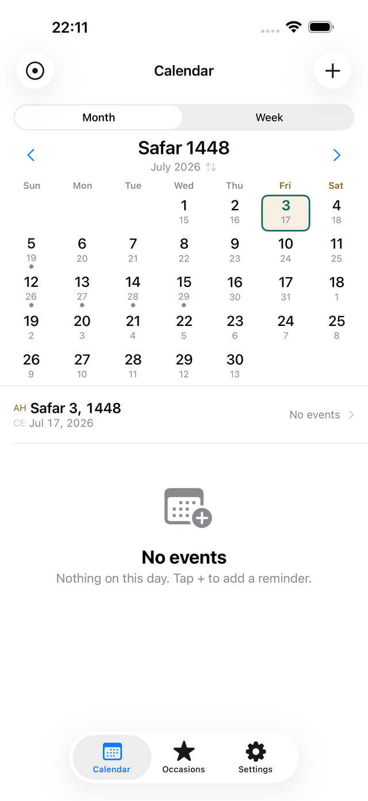
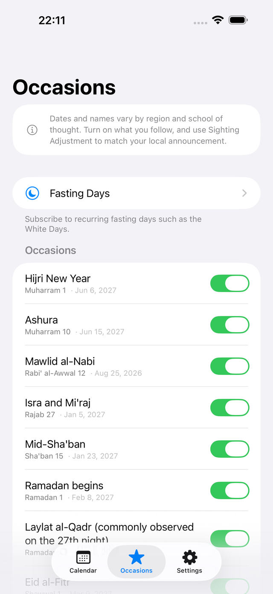
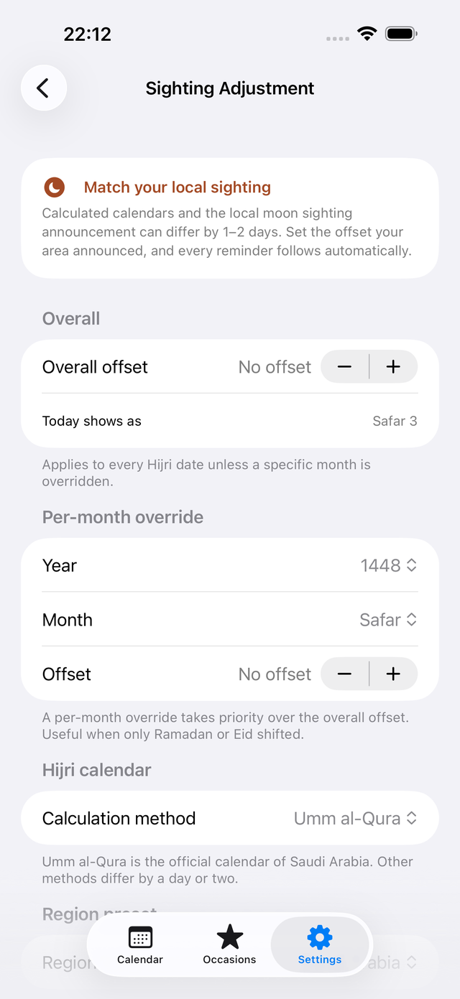

Your days, by the moon.
Qamari treats the Hijri date as the primary one, with the Gregorian date always alongside it.
Recurrence by the Hijri calendar, and notifications that follow your local sighting — the two things a standard calendar cannot do.



iPhone / iOS 26.0 or later · English / العربية / 日本語 · No account needed
Hijri first, Gregorian always alongside
Large Hijri, small Gregorian
In both month and week views the Hijri date leads. The Gregorian date sits beneath it, so you can still line things up with everyone else's calendar.
Swap with one tap
Tap the month header and the two calendars swap places. Lead with the Gregorian date when you need to, then switch back.
Numerals and weeks, your way
Choose Arabic-Indic (٤٥٦) or Western numerals. Week start (Saturday or Sunday) and weekend (Fri–Sat or Sat–Sun) follow your regional preset and can be changed.
Repeating by the Hijri calendar, at last
A lunar year is about 11 days shorter than a Gregorian one, so a Hijri occasion moves earlier in the Gregorian year, every year. Setting "yearly" in a Gregorian calendar is not the same as yearly in the Hijri one.
Every Hijri year
The same Hijri day and month, coming around exactly once a year. The Gregorian date changes each year; your setting doesn't.
Every Hijri month, or a specific date
Repeat on the same Hijri day each month, or on a specific date such as the 1st of Ramadan. Weekly recurrence is supported too.
See where it lands
While you're creating the event, a preview shows the Gregorian dates it will fall on. "When is next Ramadan?" is answered on the spot.
Your notifications follow the sighting
A calculated calendar and your local moon sighting announcement can differ by a day or two. Editing every saved event one by one each time is not realistic.
Overall offset
Set -2 to +2 days to match what your area announced, and both the calendar and the dates of every saved reminder follow automatically. Nothing to fix by hand.
Per-month override (Pro)
When only Ramadan or Eid shifted, override that single month. Per-month overrides take precedence over the overall offset.
Pick your method
Switch between Umm al-Qura (the default, and the official calendar of Saudi Arabia), Civil and Tabular.
Qamari never claims a date is the correct one. Which announcement to follow is always your decision.
Occasions and fasting days are yours to choose
Dates and names vary by region and by school of thought. So Qamari does not enable occasions in bulk. Open the list and turn on only the ones you follow. No interpretation is ever asserted.
The main occasions
Hijri New Year, Ashura, the two Eids, the start of Ramadan and more. Only what you turn on appears in your calendar and notifications.
Fasting presets
The White Days (13th, 14th, 15th of every Hijri month) are free. Pro adds Mondays and Thursdays, and six days in Shawwal.
Lunar years elapsed
Show how many Hijri years have passed on your anniversaries — a different number from the Gregorian count.
Move between the two calendars
v1.1 adds a date converter. Convert between Hijri and Gregorian in both directions, measure the number of days between two dates, and see an age counted in lunar years. Copy both dates at once. It is free.
Both directions
Pick the calendar you are typing in and the other one is calculated. If you have set a sighting adjustment, the result follows it.
Span and age
The number of days between two dates, elapsed lunar years, and the days until the next lunar anniversary.
Moon phase
Drawn from the Hijri day you are viewing. Shift the date with a sighting adjustment and the phase moves with it.
Also new in v1.1
iPad support
On a wide screen the calendar and your events sit side by side. The same data, on both devices.
Occasions across their span
Multi-day occasions such as Eid and the Days of Tashriq are shown across their whole span, not only on the first day.
Thirteen region presets
All six GCC states plus Egypt, Jordan, Iraq, Türkiye, Malaysia, Indonesia and Pakistan. The first day of the week and the weekend (Fri-Sat, Sat-Sun or Friday only) can be changed in settings.
Reminder time
Choose when reminders fire. Pro lets you set a different time for an individual reminder.
Share as an image
Turn a date or an occasion into a card image. Drawing and sharing both happen on your device.
Shortcuts (Pro)
Ask Siri, Spotlight, the Shortcuts app or your Apple Watch for today's Hijri date or the next occasion.
Your data stays on your device
Qamari works entirely offline. There is no account to create. Your events, occasion settings and sighting adjustments are stored on your device and nowhere else. Nothing is sent to a developer's server — there isn't one. Notifications are local, and every feature works in airplane mode.
No ads. No tracking. App Privacy: Data Not Collected.
Free and Pro
| Feature | Free | Pro |
|---|---|---|
| Dual calendar view | Everything | ✓ |
| Islamic occasions | This year | Every year |
| Hijri reminders | Up to 3 | Unlimited |
| Sighting adjustment | Overall | Per month |
| Fasting day presets | White Days | All |
| Widgets | — | ✓ |
| Export / calendar sync | — | ✓ |
| Type it naturally | — | ✓ |
| Reminder time | One time for all | Per reminder |
| Ramadan countdown and date notes | — | ✓ |
| Shortcuts and Apple Watch | — | ✓ |
Pro is a one-time purchase, not a subscription. You can restore it at any time.
Getting started
- Pick a regional preset. Your week start, weekend and calculation method are set to match.
- On the Occasions tab, turn on the occasions you follow.
- Tap + on the Calendar tab and choose a repeat rule such as Every Hijri year.
- In Settings → Calendar → Sighting adjustment, match your local announcement. Every saved reminder follows.
- Add a widget to see today's Hijri date and your next occasion from the Home Screen.
Questions
How is this different from the built-in Calendar app?
Two things. First, you can create events that repeat every Hijri year. A lunar year moves about 11 days earlier in the Gregorian calendar each year, so a Gregorian calendar cannot express it. Second, the sighting adjustment: shift the dates to match your local announcement and every reminder you have already saved follows automatically.
What if the calculated calendar and my local announcement differ?
Use the sighting adjustment. The overall offset covers -2 to +2 days, and with Pro you can override a single month. Adjusting updates both the calendar display and the dates of every saved reminder.
Which calculation methods are supported?
Umm al-Qura (the default), Civil and Tabular. You can switch in Settings. Umm al-Qura is the official calendar of Saudi Arabia. Methods can differ by a day or two.
Where is my data stored?
Only on your device. There is no account, nothing is sent anywhere, there are no ads and no tracking. Every feature works in airplane mode.
How many notifications can it schedule?
iOS lets an app schedule 64 pending notifications at a time. Qamari keeps the nearest 50 scheduled and refills them as they are delivered and each time you open the app. There is no limit on the number of events themselves (Pro).
Is it a subscription?
No. Pro is a one-time purchase. Buy it once and there is nothing further to pay. You can restore it from Settings or from the paywall.
Does the app make religious rulings?
No. Qamari manages dates only. Because dates and names vary by region and school of thought, you choose the occasions you follow. It never claims a date is the correct one, and religious decisions are left to you and to the authorities you follow.